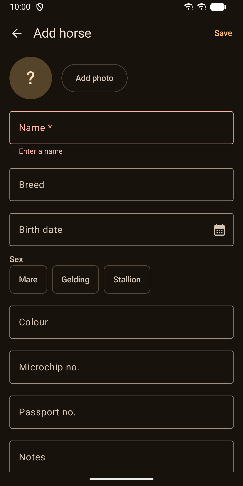
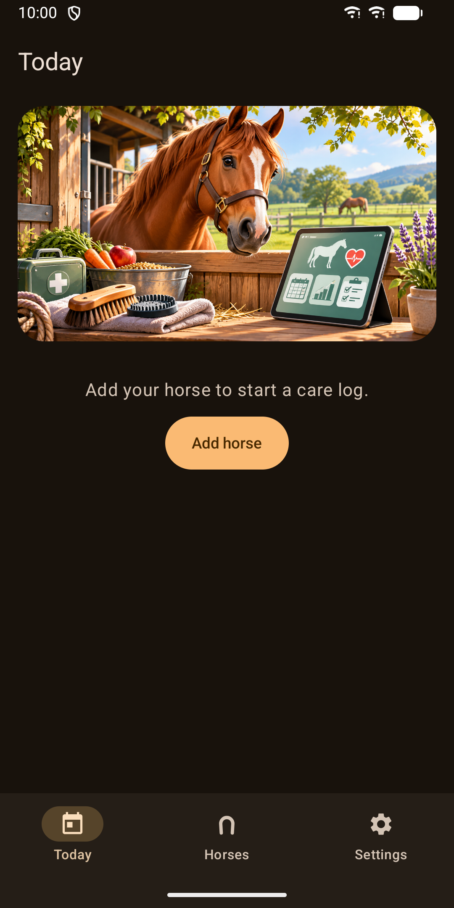
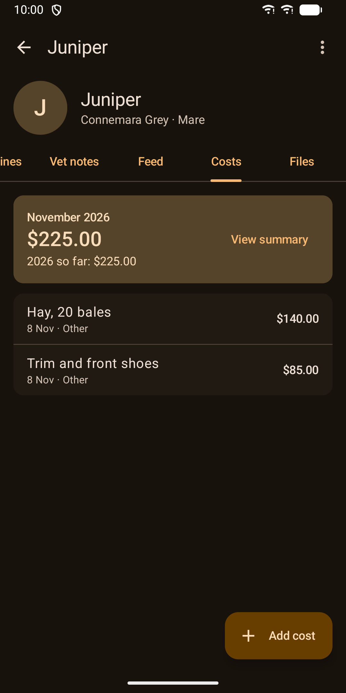
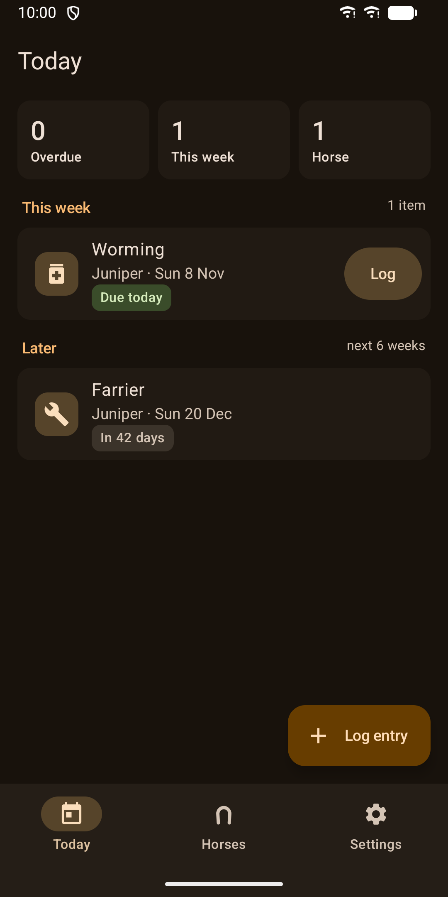

Horse Care Log: Pferdepflege
Pferdepflege: Hufschmied, Impfungen, Wurmkur, Tierarzt, Kosten, Erinnerungen.








Über die App
Die ganze Pflege deiner Pferde an einem Ort, auf dem Handy, ohne Konto und ohne Internet. Horse Care Log ist für private Pferdebesitzer mit einem bis fünf Pferden gemacht. Halte Hufschmiedtermine, Impfungen, Wurmkuren, Tierarztnotizen, Futter und Kosten fest und lass dich erinnern, bevor etwas fällig ist. Keinen Termin mehr verpassen • Wiederkehrende Termine für Hufschmied, Impfungen, Wurmkur und alles andere, etwa Zahnarzt, Sattelanpassung oder Physio. • Ein Tipp auf „Erledigt“ trägt den Termin ein und setzt das nächste Fälligkeitsdatum. Aus Versehen getippt? Rückgängig machen. • Eine Erinnerung 3 Tage vorher und eine am Tag selbst. • Die Heute-Ansicht zeigt, was überfällig und diese Woche fällig ist, für alle deine Pferde. • Ein Widget auf dem Startbildschirm zeigt auf einen Blick, was diese Woche ansteht. Alle Unterlagen an einem Ort • Pferdeprofile mit Foto, Rasse, Geburtsdatum, Geschlecht, Farbe, Chip- und Passnummer. • Impfungen mit Impfstoff, Chargennummer, Tierarzt und nächstem Termin. • Tierarztnotizen mit angehängten Fotos und PDFs, etwa Befunde, Equidenpass oder Rechnungen. • Eine tägliche Futterration pro Pferd, in kg oder lb. • Kosten nach Kategorie (Tierarzt, Hufschmied, Futter, Sonstiges) mit Summen pro Monat und Jahr. Datenschutz von Anfang an • Komplett offline. Die App hat keine Internetberechtigung. • Kein Konto, keine Cloud, kein Tracking, keine Werbung. • Deine Daten bleiben auf deinem Handy. Fotos werden verkleinert und ihre Standortdaten entfernt. • Erinnerungen auf dem Sperrbildschirm zeigen keine Pferdenamen. Pro als einmaliger Kauf • Beliebig viele Pferde. Die kostenlose Version verwaltet ein Pferd. • Ein PDF-Gesundheitsbericht mit Impf- und Tierarztverlauf, bereit für Turniere, Transporte und neue Tierärzte. • Sicherung und Wiederherstellung in eine einzige Datei deiner Wahl, auf Wunsch mit Passwort verschlüsselt (AES-256). Kostenlos für dein erstes Pferd: Pflegebuch, Erinnerungen, Kosten und das Widget. Kein Abo. Läuft auf Handys und Tablets, im hellen und dunklen Design und mit Screenreadern.